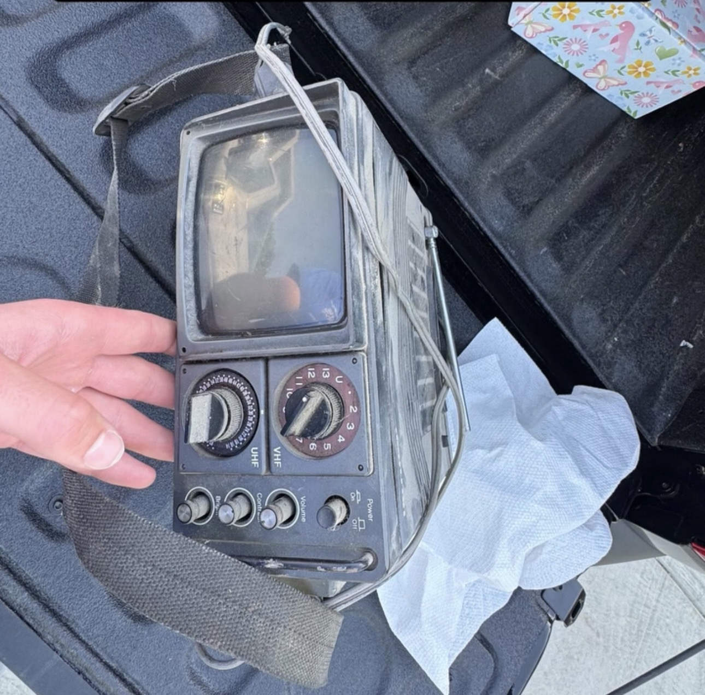
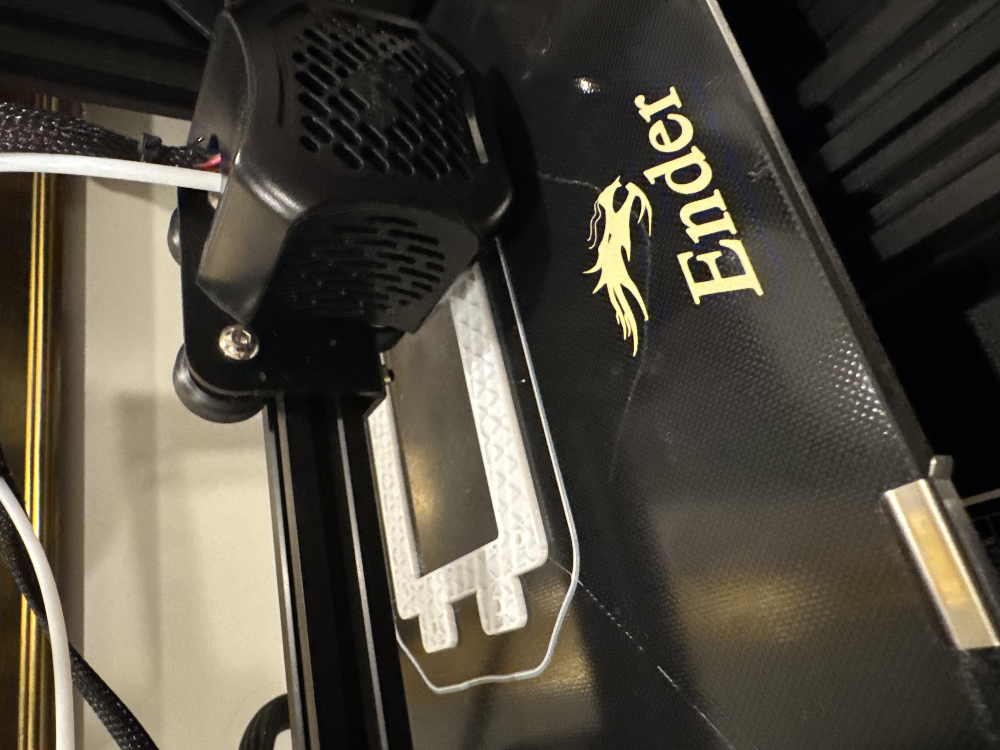
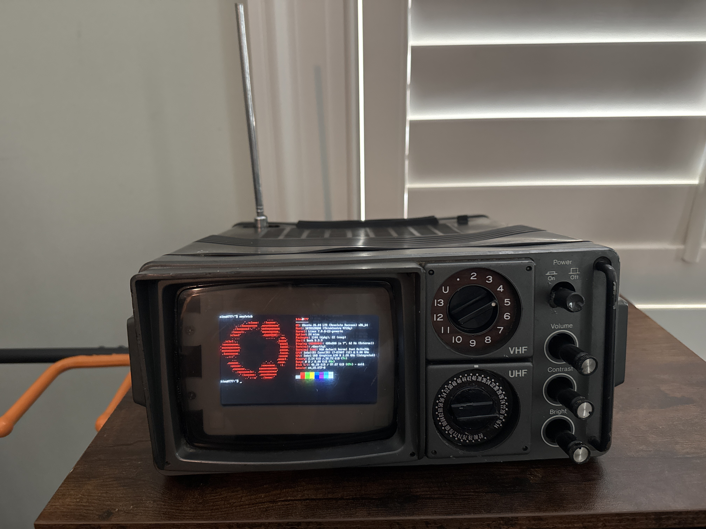
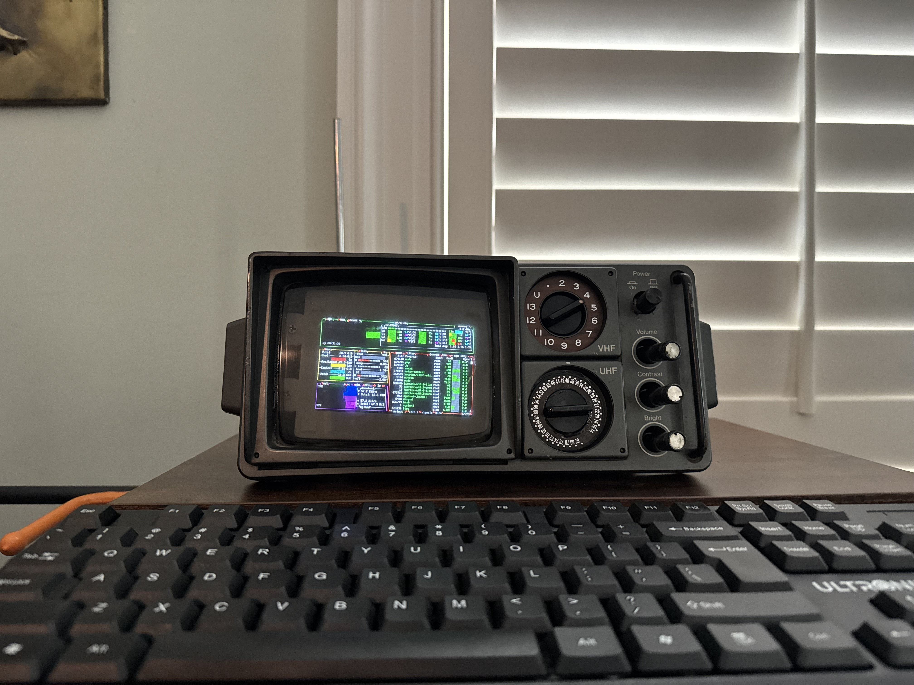
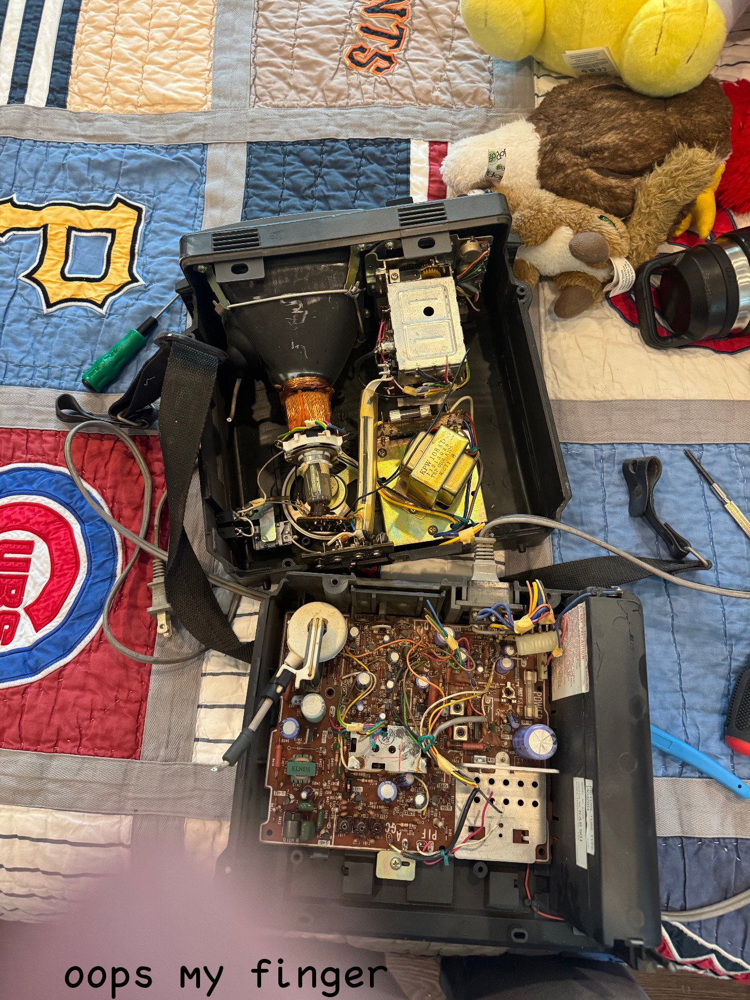

Grandma's Homelab
A Thinkcentre homelab inside an ol' CRT | June 7th, 2026
Project Overview
This homelab project is built around a Lenovo ThinkCentre server that I purchased from Micro Center in Chicago and installed inside my grandma’s 50-year-old portable CRT television. I found it caked in white dust in the back of her garage, so I knew it would be fit for the most intense of computational tasks.
Running Ubuntu Server, the system hosts several self-managed services through Docker containers, including a Minecraft server, a Cowrie honeypot for collecting and analyzing unauthorized SSH login attempts, and a Wazuh deployment for security monitoring and log analysis. Remote administration is handled through a private Tailscale VPN, allowing secure access without exposing any endpoints directly to the public internet.
To preserve the appearance of the original television while making it functional, I replaced the CRT internals with a hidden LCD display capable of showing system statistics, terminal sessions, and monitoring dashboards. I also 3D printed a custom PLA LCD housing with my Ender 3 V2 to better organize internal electronics. Overall, this way a fun way to get hands-on experience with Linux administration, containerization, network security, threat monitoring, and hardware modification.
Screenshots
Click to enhance




